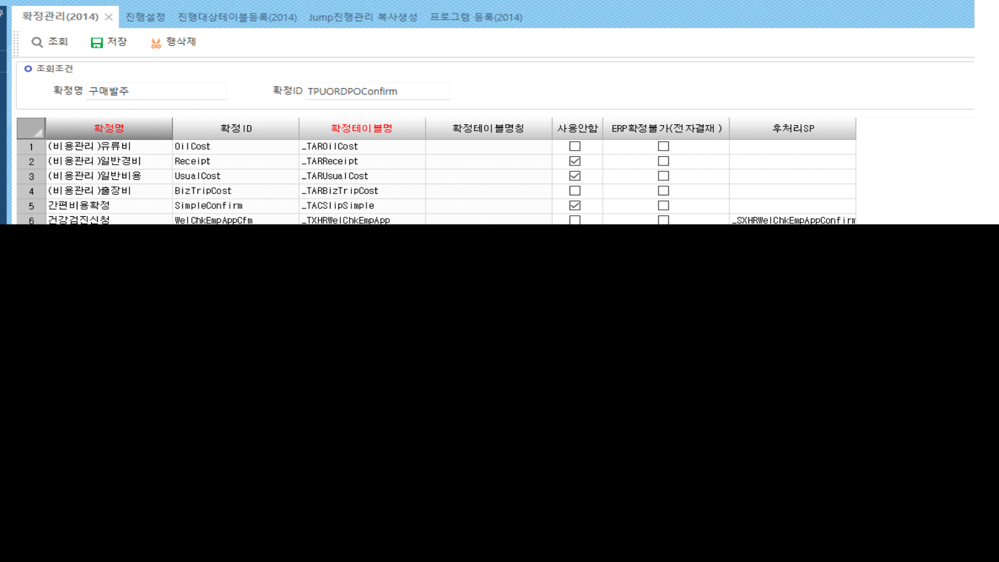
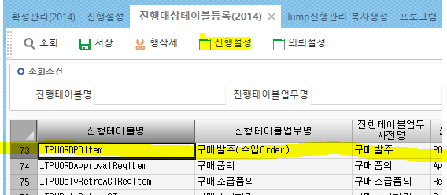
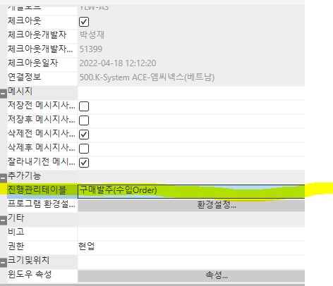
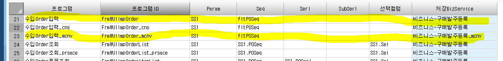
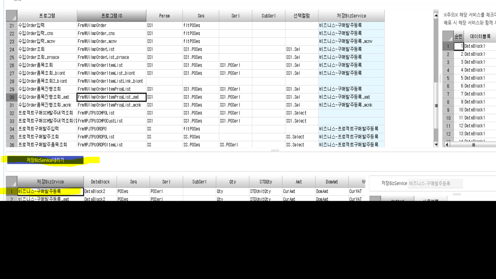
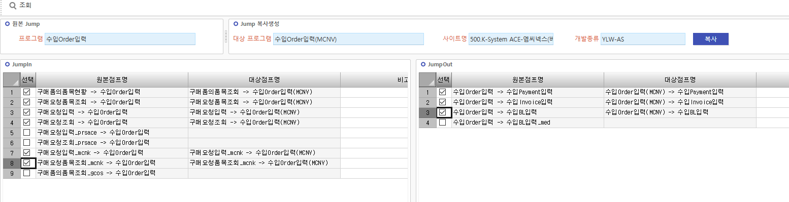
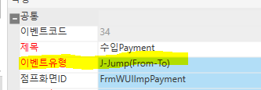
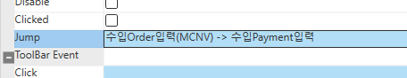
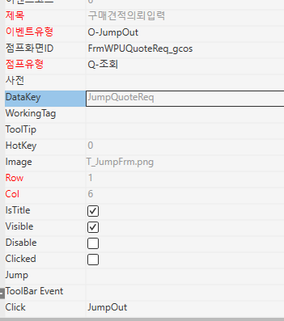

사이트 가져올 때 확정,진행,jump
사이트 따올 때 필수로 해야하는 것
+. dummy에 코드값을 넣을 경우 따로 dummy를 건드릴 필요가 없다
UseDept 컬럼 추가 / dummy10에 UseDeptSeq 넣을 경우
- 테이블 신규 생성 필요 없음
- UseDept Cd에 UseDeptSeq가 아니라 dummy10을 넣으면 된다
- 비즈니스에서 dummy를 건드릴 필요가 없다
● 필수로 해야하는 것 (확정, 진행, 점프, 점프 추가)
1. 확정관리(2014)
표준화면과 똑같은 값을 넣는다

2. 진행대상테이블등록 (2014)
진행테이블 클릭 후 => 진행설정 툴바 클릭

개발툴 – 프로그램 - (추가기능) 진행관리테이블에 저장되어 있으면
자동으로 진행설정에서 나온다
(진행설정에 없을 경우 개발툴에서 먼저 추가해야함)

표준과 똑같이 입력
+. 비즈니스를 새로 만든 경우 비즈니스는 바꿔줘야한다

저장BizService 내리기 클릭
표준 비즈니스 더블클릭 후 체크되어 있는 항목 똑같이 체크

3. Jump진행관리 복사생성
원본 Jump = 따온 표준 화면 입력
jump 복사생성 = 만든 화면 입력
사이트명 입력하면 자동으로 JumpIn, JumpOut항목이 나옴
표준에서 가는 것들만 선택 후 복사 누름

+. JumpOut에서 선택한 것들은 개발툴에서 바꿔줘야한다

이벤트 유형 : J-Jump(From-To) 인지 확인

Jump에 해당 JumpOut 입력
FrmWUIImpBLList_mcnv
FrmWUIImpBLItemList_mcnv
